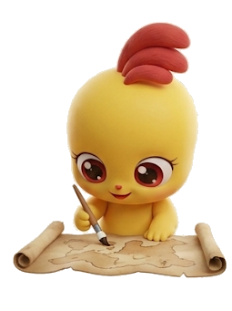
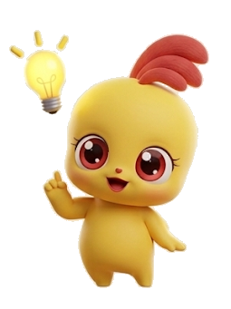

태양계 행성 탐험 도감
행성을 누르면 탐험 도장이 찍혀요. 8개를 모두 모아 보세요!
[4과13-02] 태양계 구성원을 알고, 태양과 행성을 조사할 수 있다
태양에서 순서
지름 (지구=1)
태양과의 거리
한 바퀴 도는 데
위성 수
탐험 도장 찍기
닫기
행성 퀴즈
다음 문제
도장 모두 지우기

탐험 도장은 이 태블릿(브라우저)에만 저장돼요. 다른 기기에서는 보이지 않아요.